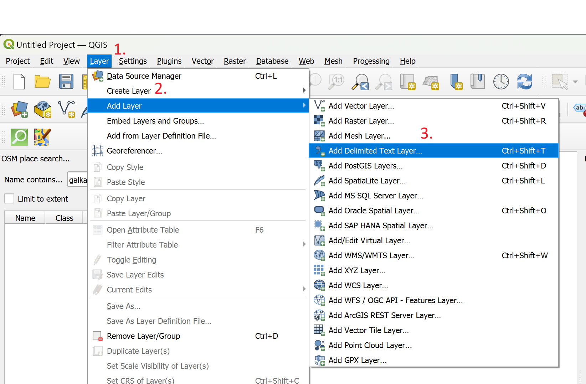
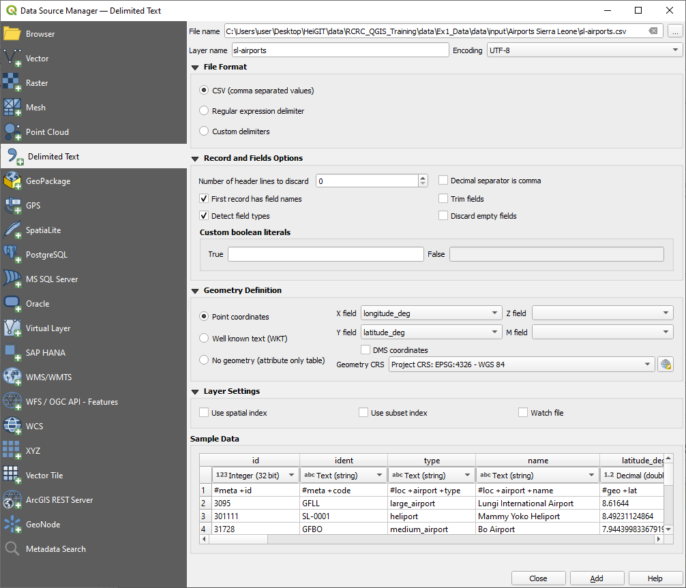
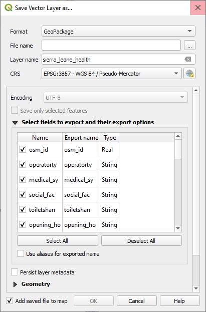
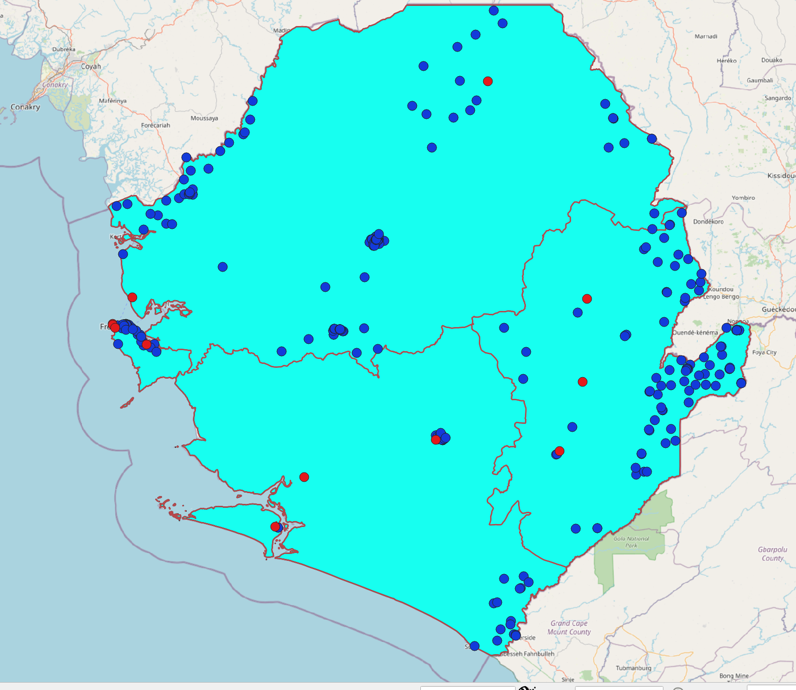

Exercise 1: Understanding Geodata#
Characteristics of the exercise#
Aim of this exercise:
The objective of this exercise is to make your first steps in QGIS. Understand the user interface and get to know the layer concept. You will learn to import and display vector data into QGIS and open the attribute table. Furthermore, we will learn to reproject or change the projection of the vector datasets.
Type of trainings exercise:
This exercise can be used in online and presence training.
It can be done as a follow-along exercise or individually.
These skills are relevant for:
QGIS-Essentials
Understanding spatial components of datasets
Navigating the QGIS-interface
Managing and manipulating geodata
Performing basic and advanced spatial analyses
Estimated time demand for the exercise:
The exercise takes around 30 to 60 minutes to complete, depending on the number of participants and their familiarity with computer systems.
Relevant Wiki articles
Instructions for the trainers#
Trainers Corner
Prepare the training
Take the time to familiarise yourself with the exercise and the provided material.
Prepare a white-board. It can be either a physical whiteboard, a flip-chart, or a digital whiteboard (e.g. Miro board) where the participants can add their findings and questions.
Before starting the exercise, make sure everybody has installed QGIS and has downloaded and unzipped the data folder.
Check out How to do trainings? for some general tips on training conduction
Conduct the training
Introduction:
Introduce the idea and aim of the exercise.
Provide the download link and make sure everybody has unzipped the folder before beginning the tasks.
Follow-along:
Show and explain each step yourself at least twice and slow enough so everybody can see what you are doing, and follow along in their own QGIS-project.
Make sure that everybody is following along and doing the steps themselves by periodically asking if anybody needs help or if everybody is still following.
Be open and patient to every question or problem that might come up. Your participants are essentially multitasking by paying attention to your instructions and orienting themselves in their own QGIS-project.
Wrap up:
Leave time for any issues or questions concerning the tasks at the end of the exercise.
Leave some time for open questions.
Exercise#
Available Data#
Download all datasets here and save the folder on your computer and unzip the file.
The zip folder includes:
Dataset name |
Original title |
Publisher |
Downloaded from |
|---|---|---|---|
|
|||
|
Sierra Leone Health Facilities (OpenStreetMap Export) |
Humanitarian OpenStreetMap Team (HOT) |
|
|
Airports in Sierra Leone |
Our Airports |
The borders GeoPackage contains administrative information for Sierra Leone at both national and provincial level. Additionally, the shapefile sierra_leone_health_HOT.shp provides information on various health facilities within the country, while the sl-airports.csv CSV-file offers information on airports.
Hint
Folder structure Keep your data management clean by creating a folder structure on your computer for your QGIS-projects and geodata. The exercise data should be saved in a location where you can easily find them and the corresponding QGIS-project
Tasks#
Open the files you have downloaded in QGIS.
Unzip the folder with the exercise data.
The geopackage (
.gpkg) and shapefile (.shp) can be dragged and dropped onto the map canvas in QGIS.The .csv file needs to be imported via the layer menu.
Navigate to
Layer>Add Layer>Add delimited text layer. A new window will open. Here you can select the file you want to import by clicking on...to the right of the File name field at the top.Navigate to the folder with the exercise files and select
sl-airports.csv.Click open. The CSV-import window will update and show you a preview of the CSV-table.
The table contains geographic information. We will need to specify this under “Geometry Definition”.
Click on
Point Coordinatesand selectlongitude_degas your “X field” andlatitude_degas your “Y field”.
Click add. a new point layer with the airports should appear on your map canvas.
{kind=link}

Opening the CSV-import window#
{kind=link}

Screenshot of the Data Source Manager - Delimited Text to load a CSV file#
Interact with the map and explore the datasets. Use the zoom tool and move the map. Focus on the scale window and observe how it varies as you zoom in and out.
Familiarise yourself with the layer panel (layer list). Show and hide different layers and move layers around in the hierarchy. Give the data layer a meaningful name.
Note
Renaming the layer does not affect the data source, such as file names or storage location.
Check out the attribute data of the layers by examining the attribute table.
Change the projection in the map view to
WGS 84 / Pseudo-Mercator EPSG:3857. You can do this in the bottom right corner of your QGIS window.
Note
This does not change the projection (coordinates) of the files, only the projection of the map view. Verify this by looking at the properties of the point layer. What projection is shown there?
Hint
To obtain information about a layer and its projections, double-click on the layer and look for the Information section. This section contains general details such as the file name and file path, as well as information about the Coordinate Reference System (CRS) in the respective section.
Save the health facility layer in the
WGS 84 / Pseudo-Mercator EPSG:3857projection. This will change the projection of the file. This can be done by right-clicking on the layer –>Export–>Save Features As... In the pop-up window, select GeoPackage as the output file format and specify the file location and name by clicking on the three small points. The file can also be given a layer name, which will be displayed when it is loaded into QGIS. Before running this process, the projection can be changed by selecting the desired CRS in the designated section. Verify the changed projection by looking at the properties of the newly created layer.
{kind=link}

Screenshot of the Export window#
Save your project.
Optional: You can add the OpenStreetMap base map via the browser window, under
XYZ Tiles.
Note
Combining layers in different projections with online basemaps (typically have their own projections) can lead to display issues due to CRS conflicts. When layers have a distinct CRS, they may not align correctly or appear distorted when overlaid with an online basemap. To mitigate these problems, it’s advisable to either reproject the layers to match the CRS of the basemap (which is often not applicable) or temporarily remove the basemap before saving the project. This ensures that the map is displayed accurately and avoids potential visual discrepancies caused by CRS inconsistencies.
{kind=link}

This is how your output could look like in the end#